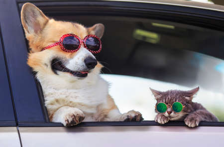

Taxi Pet
serviço de Taxi pet do Petshop da Belinha é a solução ideal para você que precisa levar seu pet com segurança e conforto para qualquer compromisso. Nosso transporte é realizado em veículos adaptados e higienizados, garantindo que seu animal viaje em um ambiente limpo e livre de estresse. Nossos motoristas são treinados para o manejo pet, priorizando a segurança em todo o trajeto. Utilizamos caixas de transporte ou cintos de segurança adequados ao porte do seu animal, seguindo todas as normas de trânsito. Seja para levá-lo ao nosso Petshop para banho e tosa, a uma consulta veterinária, ou a qualquer outro destino em Francisco Morato, Franco da Rocha ou Mairiporã, você pode confiar na pontualidade e no cuidado da Belinha.

Importancia
Contratar um serviço de Taxi Dog especializado é crucial para garantir a segurança e o bem-estar do seu pet durante o deslocamento. O transporte inadequado em veículos comuns pode causar estresse, náuseas e, mais importante, é perigoso em caso de freadas bruscas ou acidentes. O Taxi Dog da Belinha remove esses riscos, proporcionando uma viagem tranquila e sob supervisão profissional. Além disso, a comodidade é fundamental para o tutor: você não precisa se ausentar do trabalho ou alterar sua rotina, garantindo que seu pet não perca horários cruciais de vacinas, medicamentos ou procedimentos estéticos. É a ponte segura e confortável entre sua casa e o cuidado de que seu pet necessita.
